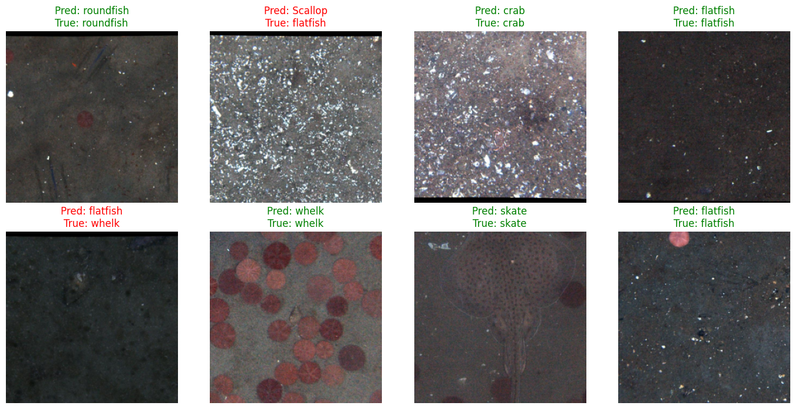
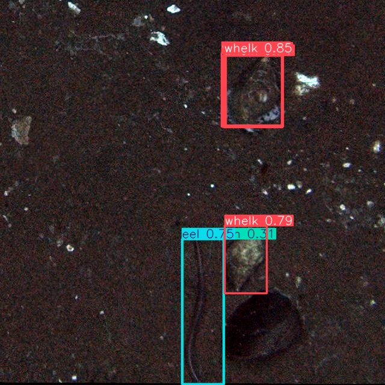

<body style="background-color: lightblue;">
</body>
<header>
  <h1 style="text-align: center;">Team Bottom Feeders</h1>
  <h2 style="text-align: center;">Marine Science AI Case-A-Thon Submission</h2>
  <h3 style="text-align: center;">Jimmy Bach, Chris Tillotson, Whitley Ford</h3>
</header>

<header>
  <h2>Image Classification</h2>
      <h3>Process</h3>
        <p> Our goal was to train an AI model to identify benthic marine organisms from images. First, we split the images and labels provided in the competition data into a testing set and a training set. 
</p>
      <h3>AI Use</h3>
        <p>We used ChatGPT to aid in writing code. Here is a link to the conversation <a href="ChatGPT_Convo_objectdetection.pdf">transcript</a>
. </p>
      <h3>Code</h3>
</header>
        <pre><code>
!mkdir -p /content/dataset # first we connected to where we stored our classification data locally
!cp -r /content/drive/Shareddrives/CaseathonFall2025/ImageClassification/classification_dataset/* /content/dataset/
</code></pre>
<pre><code>
# Imports
import os
import csv
import json
from PIL import Image
from tqdm import tqdm
from sklearn.model_selection import train_test_split
import torch
import torch.nn as nn
from torch.utils.data import Dataset, DataLoader
from torchvision import transforms, models


# =====================
# 1. Custom Dataset to work with our data and loading
# =====================
class CustomDataset(Dataset):
    def __init__(self, img_dir, label_file, transform=None, cache=False):
        self.img_dir = img_dir
        self.transform = transform
        self.cache = cache
        self.images, self.labels = [], []
        self.label_to_idx = {}
        self.cache_data = {}


        # Read labels
        with open(label_file, "r") as f:
            for line in f:
                img_name, label = line.strip().split()
                self.images.append(img_name)
                self.labels.append(label)


        # Encode string labels into integers
        unique_labels = sorted(set(self.labels))
        self.label_to_idx = {label: i for i, label in enumerate(unique_labels)}
        self.labels = [self.label_to_idx[l] for l in self.labels]


        # Optional caching
        if cache:
            print("⚡ Caching images into memory...")
            for img_name in tqdm(self.images):
                path = os.path.join(self.img_dir, img_name)
                self.cache_data[img_name] = Image.open(path).convert("RGB")


    def __len__(self):
        return len(self.images)


    def __getitem__(self, idx):
        img_name = self.images[idx]
        label = self.labels[idx]
        if self.cache and img_name in self.cache_data:
            image = self.cache_data[img_name]
        else:
            path = os.path.join(self.img_dir, img_name)
            image = Image.open(path).convert("RGB")
        if self.transform:
            image = self.transform(image)
        return image, label


# =====================
# 2. Transformations to reduce computation requirements
# =====================
transform = transforms.Compose([
    transforms.Resize((256, 256)),
    transforms.ToTensor(),
    transforms.Normalize(mean=[0.485, 0.456, 0.406],
                         std=[0.229, 0.224, 0.225])
])


# =====================
# 3. Dataset Setup
# =====================
img_dir = "/content/dataset/images"
label_file = "/content/dataset/labels.txt"
dataset = CustomDataset(img_dir, label_file, transform=transform, cache=False)


train_idx, val_idx = train_test_split(range(len(dataset)), test_size=0.2, random_state=42)
train_dataset = torch.utils.data.Subset(dataset, train_idx)
val_dataset = torch.utils.data.Subset(dataset, val_idx)


train_loader = DataLoader(train_dataset, batch_size=64, shuffle=True, num_workers=8, pin_memory=True)
val_loader = DataLoader(val_dataset, batch_size=64, shuffle=False, num_workers=8, pin_memory=True)
</code></pre>
<pre><code>
# =====================
# 4. Model Setup
# =====================
device = torch.device("cuda" if torch.cuda.is_available() else "cpu")
num_classes = len(set(dataset.labels))


model = models.resnet50(pretrained=True)
model.fc = nn.Linear(model.fc.in_features, num_classes)
model = model.to(device)


criterion = nn.CrossEntropyLoss()
optimizer = torch.optim.Adam(model.parameters(), lr=1e-4)


# =====================
# 5. Logging Setup
# =====================
results_dir = "/content/drive/Shareddrives/CaseathonFall2025/ImageClassification/results/resnet50_640px"
os.makedirs(results_dir, exist_ok=True)


# Save config
config = {
    "model": "resnet50",
    "epochs": 10,
    "batch_size": 64,
    "learning_rate": 1e-4,
    "train_size": len(train_dataset),
    "val_size": len(val_dataset),
    "num_classes": num_classes
}
with open(os.path.join(results_dir, "config.json"), "w") as f:
    json.dump(config, f, indent=4)


# CSV header
metrics_path = os.path.join(results_dir, "metrics.csv")
with open(metrics_path, "w", newline="") as f:
    writer = csv.writer(f)
    writer.writerow(["epoch", "train_loss", "train_acc", "val_acc"])


# =====================
# 6. Training Loop
# =====================
epochs = config["epochs"]


for epoch in range(epochs):
    model.train()
    train_loss, correct, total = 0.0, 0, 0


    for imgs, labels in tqdm(train_loader, desc=f"Epoch {epoch+1}/{epochs}"):
        imgs, labels = imgs.to(device), labels.to(device)
        optimizer.zero_grad()
        outputs = model(imgs)
        loss = criterion(outputs, labels)
        loss.backward()
        optimizer.step()


        train_loss += loss.item() * imgs.size(0)
        _, predicted = outputs.max(1)
        correct += predicted.eq(labels).sum().item()
        total += labels.size(0)


    train_acc = 100. * correct / total
    avg_loss = train_loss / total


    # Validation
    model.eval()
    val_correct, val_total = 0, 0
    with torch.no_grad():
        for imgs, labels in val_loader:
            imgs, labels = imgs.to(device), labels.to(device)
            outputs = model(imgs)
            _, predicted = outputs.max(1)
            val_correct += predicted.eq(labels).sum().item()
            val_total += labels.size(0)


    val_acc = 100. * val_correct / val_total


    # Log results
    print(f"Epoch [{epoch+1}/{epochs}] | Loss: {avg_loss:.4f} | Train Acc: {train_acc:.2f}% | Val Acc: {val_acc:.2f}%")


    with open(metrics_path, "a", newline="") as f:
        writer = csv.writer(f)
        writer.writerow([epoch + 1, avg_loss, train_acc, val_acc])


    # Save checkpoint (weights + optimizer + metrics)
    checkpoint_path = os.path.join(results_dir, f"checkpoint_epoch{epoch+1}.pth")
    torch.save({
        "epoch": epoch + 1,
        "model_state_dict": model.state_dict(),
        "optimizer_state_dict": optimizer.state_dict(),
        "train_loss": avg_loss,
        "train_acc": train_acc,
        "val_acc": val_acc
    }, checkpoint_path)


# =====================
# 7. Save Final Model
# =====================
final_model_path = os.path.join(results_dir, f"resnet50_final.pth")
torch.save(model.state_dict(), final_model_path)
print(f"\n✅ Training complete! Final model and logs saved in: {results_dir}")
</code></pre>
<pre><code>
import matplotlib.pyplot as plt
import numpy as np
from torchvision.utils import make_grid
results_dir = "/content/drive/Shareddrives/CaseathonFall2025/ImageClassification/results/resnet50_experiment"
# =====================
# 1. Load Trained Model
# =====================
checkpoint_path = os.path.join(results_dir, "resnet50_final.pth")
model.load_state_dict(torch.load(checkpoint_path, map_location=device))
model.eval()


# Reverse label mapping for display
idx_to_label = {v: k for k, v in dataset.label_to_idx.items()}


# =====================
# 2. Get a Few Samples
# =====================
sample_loader = DataLoader(val_dataset, batch_size=8, shuffle=True)
images, labels = next(iter(sample_loader))
images, labels = images.to(device), labels.to(device)


# =====================
# 3. Run Predictions
# =====================
with torch.no_grad():
    outputs = model(images)
    _, preds = torch.max(outputs, 1)


# =====================
# 4. Visualization Function
# =====================
def show_predictions(images, labels, preds, idx_to_label):
    images = images.cpu()
    fig, axes = plt.subplots(2, 4, figsize=(14, 7))
    axes = axes.flatten()


    for i, ax in enumerate(axes):
        if i >= len(images):
            ax.axis("off")
            continue
        img = images[i].permute(1, 2, 0).numpy()
        img = np.clip(img * np.array([0.229, 0.224, 0.225]) +
                      np.array([0.485, 0.456, 0.406]), 0, 1)
        ax.imshow(img)
        true_label = idx_to_label[labels[i].item()]
        pred_label = idx_to_label[preds[i].item()]
        color = "green" if true_label == pred_label else "red"
        ax.set_title(f"Pred: {pred_label}\nTrue: {true_label}", color=color)
        ax.axis("off")


    plt.tight_layout()
    plt.show()


# =====================
# 5. Display Results
# =====================
show_predictions(images, labels, preds, idx_to_label)
</code></pre>

<header>
      <h3>Results</h3>
      

  <h2>Object Identification</h2>
      <h3>Process</h3>
        <p> Our goal was to train an AI model to locate and identify marine organisms within images. We used a pre-trained model from <a href="https://docs.ultralytics.com/">Ultralytics</a>. First, we trained the model for 100 epochs, using the data provided for the case competition. Then, we ran the function, model.tune, to improve accuracy and the base kinetic algorithms to tune model parameters.  
</p>
      <h3>AI Use</h3>
        <p>We used ChatGPT to aid in writing code. Here is a link to the conversation <a href="...">transcript</a>
. </p>
      <h3>Code</h3>
        <pre><code>
# This is the entirety of the code we used for object detection

pip install ultralytics


from ultralytics import YOLO
import os


#os.chdir('drive/Shareddrives/CaseathonFall2025/ObjectDetectionYOLO/object_detection_dataset')
# Load a model
model = YOLO("yolo11x.pt")  # load a pretrained model (recommended for training)
os.chdir('drive/Shareddrives/CaseathonFall2025/ObjectDetectionYOLO/object_detection_dataset')


# Train the model
results = model.train(data="data.yaml", epochs=100, imgsz=640)
model.val()

model.tune(epochs=20,resume=True)

model
</code></pre>

      <h3>Results</h3>
  

</header>
<header>
  <h2>AI and Machine Learning in Marine Science</h2>
  <p>
    
    Iterations of image annotation models, like <a href=https://coralnet.ucsd.edu/about/#story>CoralNet,</a> which was developed at UCSD, have been in use in the field of marine science for almost 20 years. CoralNet improves efficiency of research by automatedly annotating images of both living and bleached coral. It is open source and continually gathers new data through citizen science. 
  
    
  </p>
</header>

